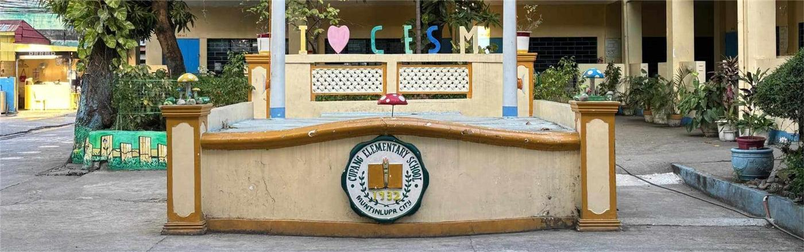

Who we are
Cupang Elementary School is a public educational institution in Barangay Cupang, Muntinlupa City, serving the local community.
It operates under the supervision of the Department of Education through the Schools Division Office of Muntinlupa City, and continues to provide quality education to the residents of Barangay Cupang and its neighboring areas.

Our history
Cupang Barrio School
The first school in Cupang was the Cupang Barrio School, later renamed Cupang Elementary School. School research suggests it may date back to 1905.
Still being verified"The oldest elementary school in Muntinlupa!"— Toting Bunye
Official year of establishment
The year carried on the school seal and in the school's official records.
Cupang Elementary School Main
School ID 136912, under the DepEd Schools Division Office of Muntinlupa City.
Core values
The four core values of the Department of Education.
- Maka-DiyosLove of God
- Maka-TaoLove of people
- Maka-KalikasanLove of nature
- Maka-BansaLove of country
DepEd Vision
"We dream of Filipinos who passionately love their country and whose values and competencies enable them to realize their full potential and contribute meaningfully to building the nation."
As a learner-centered public institution, the Department of Education continuously improves itself to better serve its stakeholders.
DepEd Mission
To protect and promote the right of every Filipino to quality, equitable, culture-based, and complete basic education where:
- Students learn in a child-friendly, gender-sensitive, safe, and motivating environment.
- Teachers facilitate learning and constantly nurture every learner.
- Administrators and staff, as stewards of the institution, ensure an enabling and supportive environment for effective learning to happen.
- Family, community, and other stakeholders are actively engaged and share responsibility for developing life-long learners.
School organizations
Sample entries. Replace with the real organizations and their heads.
- Org 1Sample
Organization name
Head: name of adviser or president
- Org 2Sample
Organization name
Head: name of adviser or president
- Org 3Sample
Organization name
Head: name of adviser or president
Facilities
The stage, buildings, clinic, garden and covered court. Visit the Facilities page